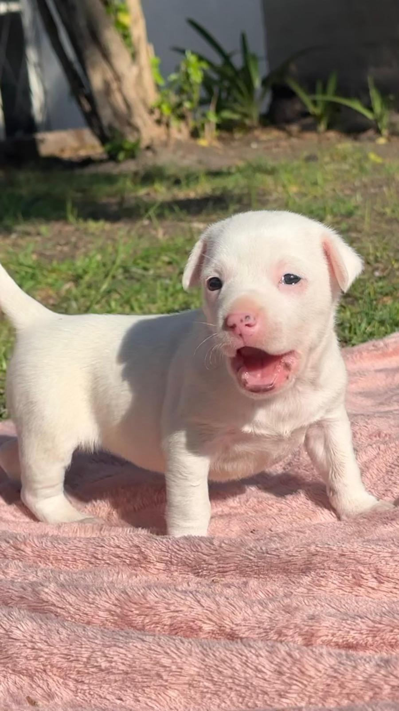
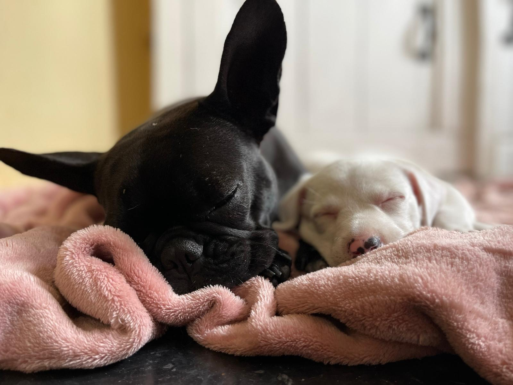

Grace

Grace llego a nuestra familia cuando tenia apenas 20 dias de vida. Formaba parte de una camada de seis cachorros. Su mama estaba muy debil porque no tenia alimento suficiente, y la familia que los tenia no contaba con los recursos para cuidar de todos. Adoptarla fue la forma de darle una oportunidad. Hoy, Grace es una compañera inseparable. llena de energia, cariño y amor. Su historia nos recuerda que una decision puede cambiar una vida para siempre.
Asi fue creiendo Grace desde que llego a su nuevo hogar.
Momentos de Grace





La historia de Grace demuestra que una adopcion responsable puede cambiar una vida para siempre. Tal vez la proxima historia pueda empezar con vos.
Conoce mascotas que esperan una familia.